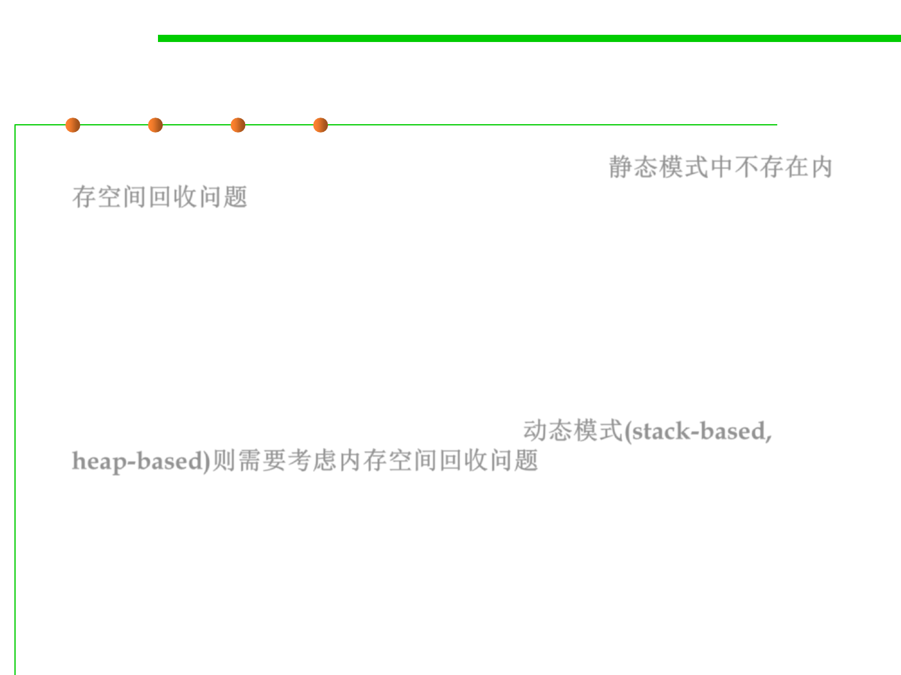

8.1 Metrics, Principles, and Methods of Construction for Performance
Space reclamation in static modes
▪ In the static mode, the problem does not exist: 静态模式中不存在内
存空间回收问题
– For every object, there is exactly one attached entity;
– Execution needs to retain the object’s space as long as the entity is active.
– So there is no possibility for reclamation in the proper sense.
▪ The ability to create objects dynamically, as in the stack-based and
heap-based modes, raises the question: 动态模式(stack-based,
heap-based)则需要考虑内存空间回收问题
– What to do when an object becomes unused: is it possible to reclaim its
memory space, so as to use it again for one or more new objects in later
creation instructions?